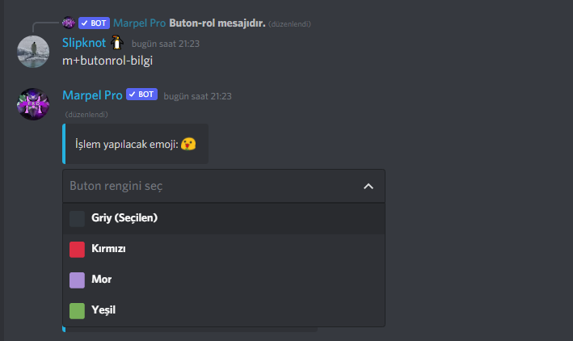

Tepkirol Sistemi Tanıtımı
Tepkirol sistemi; Ayarladığımız bir tepki (mesaja konulan emoji) yada butona basıp aldığımız rolün sistemidir.
Tepkirolü ayarlama ve sıfırlama sistemlerinin kullanımı:
m!tepkirol-ekle <mesajid> <emoji> <@rol>
m!tepkirol-çıkar <mesajid> <emoji>
Mesaj ID'sini öğrenmek için, ayarlardan geliştirici modunu aktif etmiş olmanız gerekmektedir.
Komutları yalnızca eklenecek olan mesajın olduğu kanalda kullanın.
Özelleştirme
Aynı mesaj içinde mevcut tepkilerden sadece birini aldırır. Kullanım:
Oluşturulan tepkirolün bilgi ve detaylarını gösterir. Kullanım:
m!tepkirol-bilgi <mesajid> &lkanal>
Tepki-Buton Sisteminin Tanımı
Tepki-buton ayarlama sisteminin kullanımı:
m!butonrol-ekle <mesajid> <emoji> <@rol>
Özelleştirme
Butonrol bilgi komutuyla mesajımı baştan düzenleyebiliriz.
m!butonrol-bilgi <mesajid> <#kanal>
Özelleştirmede ise butonun rengini değiştirebilirsiniz. Örnek:
